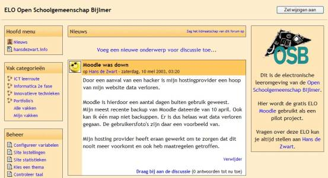
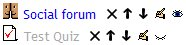
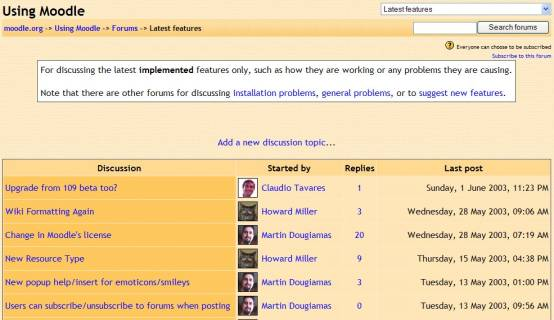
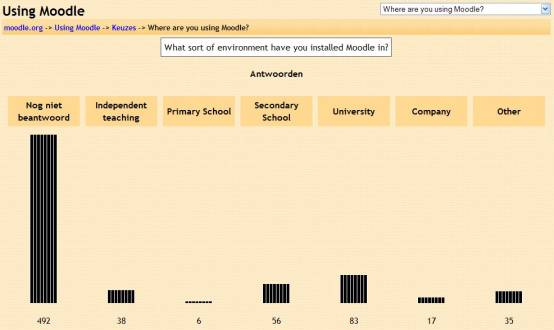
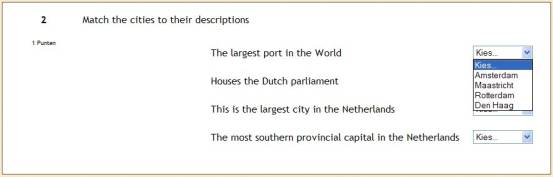
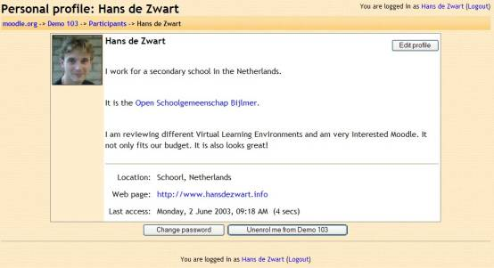
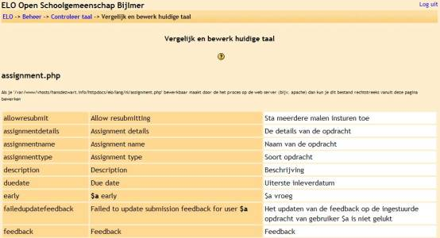

|
|
Certificate in Online Training and Education Hans de Zwart Open Schoolgemeenschap Bijlmer Moodle: an Exploration of the Possible Uses in Secondary
Education Date of submission: June 2nd, 2003 |
|
|
|
Contents
1.6.3 Logs and
activity reports
1.5.1 Multilingual
and Language Independent
2 Didactic
Approaches with Moodle
2.1 Utilizing
Experts through Discussion Forums
2.1.2 Virtual
Assignment Provider
2.2 International
Cooperation with a Digital Learning Environment
2.3 Digital
Cooperative Assignments
2.4 Peer
Review/Feedback in a Discussion Forum
2.5 Students with
Teacher Roles
2.7 Self Diagnostic
Tests with Feedback
3 Moodle as a
School Website/Portal
3.1 The right tool
for the job?
3.2 Integrating
Moodle into your site
Appendix I: Technical
Requirements
Appendix III Open
Source Software License
Moodle is a piece of software. It is what nowadays is called courseware. In a sense it is comparable to online digital learning environments like Blackboard, WebCT or Teletop. It is different from them in one major aspect: it has an open source license. That means it is freely available and that anyone is able to see the source code and even change it. Especially small institutions are able to use this adaptability to their advantage. This essay is about how Moodle could be used in secondary education.
Martin Dougiamas is the sole creator of Moodle. As an Australian who, when little, was educated out of necessity with distance learning (self study and half an hour of radio contact with a teacher every day), he has been interested in means for distance education ever since. Moodle stands for Modular Object Oriented Dynamic Learning Environment. Being Modular anyone can write any module they would like for it. Object Oriented refers to the programming method. Dynamic reflects the fact that the web pages are dynamically created and the word “Moodle” tries to show the feeling you get while using the product. The meaning of Learning Environment is obvious.
At this moment Moodle has a very active community of developers and users at http://moodle.org. Many people are creating new features, there are over 20 translators and in general the level of support is excellent.
In this essay I will do mainly three things:
§ Give an overview of Moodle’s features (chapter 1).
§ Show some didactic uses of Moodle. Which things can be realised in a secondary school with Moodle that could not have been realised before? (chapter 2)
§ Write about an alternative Moodle setup which can be used as a cheap interactive website/portal for secondary schools (chapter 3).
The technical requirements for Moodle can be found in Appendix I. Appendix II has some future plans. Appendix III is about the Open Source Software License. Finally, Appendix IV gives a summary of the context in which I, personally, use Moodle.
This introduction ends with Martin Dougiamas’ own description of the meaning of the word Moodle:
The word Moodle is an acronym for Modular Object-Oriented Dynamic Learning Environment, which is mostly useful to programmers and education theorists. It's also a verb that describes the process of lazily meandering through something, doing things as it occurs to you to do them, an enjoyable tinkering that often leads to insight and creativity. As such it applies both to the way Moodle was developed, and to the way a student or teacher might approach studying or teaching an online course.[1]
Moodle is a PHP based software product. This means that it runs in a browser. If you install it on a web server it will be accessible for anyone who has an Internet connection.
Basically Moodle can substitute a complete learning environment with a digital version. Teachers can set up discussions, publish course materials and other resources, hand out and mark assignments and create quizzes with automatic grading. Students will always be able to see exactly what the assignment is, can discuss the course with their fellow students and have all the aspects of the course in one easy space with a clear layout.
‘Changes since last login’ always give a quick overview of what has changed in the environment.
Most digital learning environments have a front-end and a back-end, or they have a special configuration or administration page. Moodle doesn’t have this. Teachers can just turn editing on or off. The first option shows icons to edit, delete and toggle visibility learning elements, the second option hides these icons.

There are presently three types of course structure.
This type of course has a starting date and a set amount of weeks. Every week can contain one or more of all the learning elements discussed in paragraph 1.3. The course is run chronologically with possible journal entries matching every week. Complete weeks can be made invisible so the course can unfold itself for the students as time progresses.
Here there are different topics. You can name each topic and every topic can have all the learning elements listed below. This is a good structure for rotating practises where all students do the same amount of topics (or maybe even get to choose), but do not do these in the same order.
Every topic can easily be made visible and invisible.
This course type is mainly useful as the quickest way to set up a course. It consists of just one topic in which to put all the learning elements. It is an excellent way for just setting up some forums.

At this moment there are seven learning elements (Moodle calls
them ‘Modules’). A course can consist of any combination of these elements in
any order. The teachers of the course can decide what elements are visible to
the users. It is possible to have materials ready for publishing with the push
of one button (see the eyes below).
Resources can be used to publish any kind of materials on the Internet.
There are mainly three types of resources:
§ Resources that are created using any type of authoring software outside of Moodle. E.g. MS Word, MS Excel, PowerPoint, HTML, Flash, Video, MP3’s, etc. These files can be uploaded into the system and then easily linked to from the course main page. Depending on the user’s browser these resources will either be shown in the browser window, or will be downloaded to the user’s computer.
§ Resources that are created inside of Moodle. A teacher has three possibilities in this regard. It is possible to type HTML directly into the system, you can use the rich text editor which offers some basic but useful formatting tools, or you can use “smart text” which is a plain text editor that will substitute hard returns into HTML line breaks and will turn URL’s en email addresses into working hyperlinks.
§ Links to other resources on the Internet (mainly HTML web pages). These links will, by teacher’s preference, open into a frame in the same browser window, or into a new browser window.
When you place materials on the Internet you should always be conscious about the size of the file you are publishing. For the student to see the file it will always have to be downloaded from the web server. If the teacher puts a 12 megabyte PowerPoint presentation in the course, students might have to wait a couple of minutes (depending on their connection) to see the file.
This element works much like any other discussion forum on the Internet. There is an introduction to a discussion by the teacher, and all members of the course are able to contribute to the forum. This can be done by creating new discussions, new posts inside an existing discussion or by answering earlier posts.
When somebody posts to the forum an email message with the posting is send to all members of the forum. This can be a HTML email with working hyperlinks to contribute to the discussion or to unsubscribe from the forum.
When viewing the forum the user has several display options. They can display oldest messages first, or the newer first. They can show the messages nested, where every answer is indented from the message it is answering, and finally they can look at the threads of messages.

While setting up a new forum the teacher has several options. One of them is to force all the students to be subscribed to the forum. This is an option often chosen for the course news forum. Another option is to let the students rate different postings according to how much the posting show separated or connected knowledge.
Discussion forums are ideal for constructivist courses where the focus lies on interaction between the students and the shared creation of knowledge. More about how to use the forums can be found in chapter 2.
This is what on the Internet is often called a ‘Poll’. The teacher can write up a question with up to six prefabricated answers. All course users can answer the poll once.
The teacher than has several display options. Either the teachers are the only ones that are able to see the results. They see the amount of choices made for every answer and they see who answered what.

The other possibility is to give the students some feedback as well. Upon the teachers discretion they will see the blind results or results with the names attached.
Assignments come in one of two ways. They can be offline or online. All assignments can be graded.
Offline assignments have no space for any file uploads. You can use these to give clear instructions about an assignment (that can even be done outside of Moodle) and to grade and give feedback on the assignment. The options for this type of assignment are to set the maximum grade (from 0 to 100) and a due date and time.
Online assignments have these same options but require students to upload a single file. The teacher can allow resubmissions for regrading and can set the maximum file size (up to 2MB).
Students receive an email once their assignments are graded or have received feedback.
Quizzes give the teacher the possibility of asking the students different types of questions and grade these automatically. Building quizzes can take quite a bit of time (that is probably also the case if you do not use any software), but once you have them they can be timesavers.
When adding a quiz the teacher can choose several options. The opening and closing dates and times can be specified, the questions and/or answers can be shuffled to make it a little bit harder for students to cheat, you can set the number of times a student is allowed to take the test (between 1 and 6 times or unlimited) and how these different attempts are graded (highest attempt, average grade, first attempt or last attempt), feedback can be enabled on wrong and right answers, and the right answer can be shown highlighted, students can be allowed to review the quiz (once it is closed) and the maximum grade can be set (between 0 and 100).
Questions are kept in categories in a question database that is shared across all courses on the Moodle site. It is possible not to publish a category for questions and keep it for private use. If you use Moodle with multiple teachers it is probably best to name every category as follows:
teachersname_coursename_topic
You can add questions to a category and then use different questions from different categories to make up a quiz.
So far, Moodle has the following question types:
§ Multiple Choice. The teacher can specify up to six choices. One answer or multiple answers are allowed. You can grade and give feedback on every choice. You can easily turn a multiple choice question into a fill in the blank by using the underscore character (e.g. The seven ________ of Moodle are resource, journal, quiz, survey, choice, forum and assignment.)
§ True/false. The teacher gives a proposition and the student answers whether it is true or false. The teacher can provide feedback for true and for false regardless of the correctness of the answer.
§ Short Answer. The teacher asks a question and the students have to type in a (couple of) word(s) as an answer. The teacher can specify up to five correct answers and can provide different grades and feedback for any of them.
§ Matching. A minimum of three and a maximum of eight questions are asked with matching answers. The students gets to choose out of all possible answer for every question.

You can add an uploaded picture to any question.
Moodle also has the possibility of importing questions from different types of sources. At this moment these are Blackboard, AON and Missing Words. Work is being done on creating the ability to import from WebCT and IMS QTI. It is also quite easy to create your own customized format, that just requires a small bit of PHP programming.
This learning element is designed to make students reflect on what they have learned. In the weekly course format the teacher can set a journal assignment with a limit on the editable time. Students can use the rich text editor to write in their journal. They can use the guidelines provided by the teacher. The teacher can give written feedback (of which the students will be notified by an email) and rate the work on a satisfaction scale.
There are two types of built-in surveys: ATTLS and COLLES. These are proven instruments for analysing online classes.
ATTLS inquires into attitudes towards thinking and learning. It contains propositions like: ‘In discussion I can obtain insight into opinions that differ from mine through empathy.’ Students then have to say how much they agree to the statement.
COLLES evaluates how well the online delivery of the course enabled learning. It comes in three modes: actual, preferred and both. It has statements like: ‘In this online unit what I learn connects well with my professional practice.’ The student then chooses how often this is true.
The value of these two instruments for students in secondary education is at the least doubtful. However it is never bad to receive some feedback on an online course and the data of the surveys can be exported
Text entered into the Moodle site is stored in a database and from there displayed into the browser. This gives users the possibility to use certain HTML tags (not all are allowed) in their texts. Users can make text bold, underlined or italic by using the standard HTML tags. Lists, headers and hyperlinks are also supported.
Moodle provides smart formatting for users that have no knowledge of HTML. Hard returns are converted into <br>-tags, URLs en email addresses are converted into working hyperlinks.
The third option for text editing is the rich text editor. This inbuilt editor has the look and feel of a standard word processor like Microsoft Word. Just by clicking on the graphical user interface you can change the font type and size, use colours, create links, and make ordered en unordered lists, etc. The rich text editor only works in Internet Explorer version 5 and higher.
Every user of the Moodle site has a personal page with information about them. This is a common feature in digital learning environments and is often called a resume or a CV. In Moodle you create it by filling out a form with a couple of standard fields like name, place of residence, e-mail address, URL of website, etc. Added to this is the possibility of uploading a user picture (in GIF or JPEG format). This picture is then added to every post in every forum the user does, and even gets send out by e-mail to subscribers of the forum. By clicking on the picture other members of the forum can see the personal page.
Finally the personal page has a field in which the user can add a lot of text and really give a proper introduction or CV about themselves. For this they can use all the editing methods described in paragraph 1.4.

The Moodle database has users that can be assigned different roles. At present the following roles are in use (this is hierarchic, so the top level users have all the privileges of the lower level users):
§ Administrator. Responsible for maintaining the complete course, and its settings. The administrator can manage the database, the users, course categories and do backups.
§ Course creator. Can create new courses and assign teachers to these courses.
§ Teacher. Within a course can add learning elements, discuss in the teachers forum, grade and look at grades. The teacher can also unenroll students and change the course key (see paragraph 1.6.2).
§ Students. Can enrol in a course, become a member (and unsubscribe) to forum in courses in which they are enrolled.
Different roles allow changing of different settings and variables. A nice feature of Moodle is that all settings can always be changed at a latter date. This means you can always undo any changes that you have made.
A weakness of the present system is the fact that it is not possible to create groups of users. Of course there are many imaginative workarounds, but none of these are very elegant. This problem will undoubtedly be addressed in a future version of Moodle (planned in Moodle 2.0, around December 2003).
The site administrator does not have to manually add all the users. Users can add themselves by creating a new account. Moodle has different options for checking whether the new account is legitimate. You can use email authentication, which is the simplest: the new users gets an email with a hyperlink. Following the link will authenticate their application.
Other authentication options are checking against different types of databases or using POP3 or IMAP authentication. Administrators can also decide to only allow manual entry of users.
You can keep users out of certain courses by assigning a course key to the course. Only users with knowledge of the course key can enter the course. They will have to put the key in once; from then on Moodle knows they are enrolled.
Moodle keeps a log of all the activities undertaken in the website. Teachers can see what students have looked at, what they have done and when they last logged in. This is good to see classroom activity or to see which sources are popular and which are not.
Moodle also provides some easy overviews that show exactly what the students have done and which assignments they still have to work at.
Teachers have an easy overview of all the grades (from the assignments, quizzes and journals) which is downloadable in Excel format or plain text format. Regrading is always possible and easy.
If somebody is not registered as a user of the Moodle site, they can opt to log in as a guest user. This gives them access to all courses that allow guest users to enter (this is an option when creating a new course). Of course they can only read things and never write.
The statistics of guest users are also logged.
Moodle has been programmed in such a way that the core of the program is completely language independent. The interface of the program (the part the user can actually see) can have any language. At the moment of writing Moodle has been translated into the following 28 languages: Arabic, Catalan, Chinese, Czech, Danish, Dutch, English, English (US), Finnish, French, German, Indonesian, Italian, Japanese, Norwegian, Polish, Portuguese, Portuguese (Brazil), Romanian, Russian, Slovak, Spanish (Argentina), Spanish (Caribbean), Spanish (Mexico), Spanish (Spain), Swedish, Thai and Turkish.
When I started to use the program there was no Dutch translation available. The program has a very easy page that facilitates the translation process. On the left you see the original English text. On the right is a space where you can put your own translation of the word or sentence.

Even if the proper language is available, it is possible that an institution would like to have some fine tuning of the words used. This can give the program more of a home feeling. Some schools call their teachers facilitators, other talk about counsellors or coaches. You might want to call courses subjects or maybe even themes. You can use the translation tool to create your own institutional version of your chosen language.
Individual users can change their language settings in their personal profile page. Some people might prefer an American English interface others cannot do without British English. International exchange projects can be easily set up in which the student in each country uses the program in their mother tongue while the messages in the forums can be in a shared language.
Moodle uses cascading style sheets to display the HTML codes in the browser. This separates the design and look of the site from the actual content.
There are some built-in themes in the Moodle package. It is easy for the administrator to change the standard theme to for example Corduroy Blue.
Making new themes is not hard. The easiest modifications are the different colours and the background and font. More proficient web designers can also change the header and footer of the page and change the different small icons that belong to the different learning elements.
If a school has a certain graphic design, a logo or is branded in a particular way it is easy to adapt Moodle to reflect this house style. Integrating Moodle into an existing school website is also not a problem.
Educational institutions are always trying to get expertise into their schools. These experts can give students a different viewpoint; they have more specific knowledge than the teacher and provide a fresh face. In general they are a positive motivational factor.
For both the schools and the expert this is an organisational strain. The fact that the students and the experts have to be in the room at the same time is a limiting factor. The expert has travel costs and time. If students fail to ask certain questions during the session, more often than not they have lost their chance.
The asynchronous nature of discussion forums provides a good alternative. The teacher can facilitate a discussion between the students and an expert around a certain theme.
Before you start you have to decide on how long the collaboration will last. This will help make it clear for the expert how much work is expected. The expert will also need as much information as possible about the subject of the course, the didactical approach and your expectations.
The expert will need a Moodle account. It is possible that the expert might need some help in using Moodle. This can be given in written form (maybe through email) or face to face.
Interaction works best if you know a little bit about each other. The personal pages in Moodle can help here. Instruct the students to put a picture of themselves (and not some avatar) on their personal page and to write a little bit about themselves and their personal interests. The expert should do the same, but also add some information about their organisation and maybe some links to relevant websites.
The teacher then makes a forum in Moodle in which students cannot create new discussions but are able to post answers on existing discussions. You can give the expert teacher rights so that he or she might start discussions if they want to. The introduction to the forum lists the requirements for the students. It is a good idea to set quantitative limits on the minimum and maximum amounts of answers that every student is expected to post. Every discussion in the forum is an argument or proposition put forward by the teacher or the expert.
The students post their reactions and answers to these propositions in the different discussions. The teacher will need to act as a moderator. Making sure that every student acts properly and fulfils the requirements.
Depending on the subject you need to assess the students on their postings. Sometimes this will not be necessary (when there is enough intrinsic motivation), at other times an assessment will push the students to write good postings.
Product based assignments are carried out with the most motivation when there is a real assignment for a real client. Often this is not possible. One solution is to make a virtual client. This client will have to get its own username in Moodle. A special forum needs to be made in which the students can make queries for the client and present their work/products (using attachments in the forum). The fictional client can then answer these as if it is a real company responding. Naturally the realer it looks and feels the better it is.
Moodle’s language independence makes it ideal for international projects. Students can use an interface that is clear and in their own language. This way they can focus their use of the foreign language on the content.
In Europe there is a lot of experience with international e-mail projects.[2] These projects have a central theme through which primary and secondary school children share their experiences.
Another nice way of setting up an international project is by letting the students collaborate in creating a product. These projects are very useful if you want to teach children how to work with people that are at a distance, if you want to show them things from a different cultural perspective or if you want to use the external expertise that another institution can offer.
It doesn’t always have to be a different country that you are collaborating with; it might as well be a different school that is located in a different part of the country.
When you do a collaboration project you will need to have some agreements with your partner about the goals of the project, the amount of time that will be put into the project by the students, the way the project will be graded, the amount of computers and technical support available to teachers and students and of course whose Moodle site to use.
With the students you need to agree on how quickly they have to react on messages send by their partner. Also they need to be instructed about the time difference that might exist.
The first part of the project should focus on getting to know each other. It always works better if you have an idea about the person you are working with. Moodle’s communication tools could be used for this. The students should make an extensive personal page so that everybody can always see the person behind a certain posting. Furthermore there should be some forum set up with compulsory ice breaker activities.
At the moment Moodle only supports asynchronous communication. There is no synchronous communication yet, although a lot of work has already been done on creating a chat module that will appear in one of the future Moodle releases. Chatting nowadays is a very natural way for students in secondary school to get to know each other.
Once the introduction period is over the project can focus more on the content. The assignments given should truly engage and motivate students. There are many things that you can do:
You can let students discuss about provocative statements.
You can let students give feedback to each others work (see paragraph 4.2)
You can give a group of students from different institutions teacher’s rights (see paragraph 2.5) and ask them to create a course about a certain subject for the other students. While they are creating the course they can communicate with each other through the teacher forum that is supplied in every Moodle course and is inaccessible for people with a student role. Of course you will need to familiarize the students with Moodle’s possibilities for creating a course.
Depending on how much time you have you can first let a group of students create the course, then run it and then let another group create a course. Another shorter version is to have all groups create a course at the same time and then run all courses at the same time with one group of students participating in every course. If you want more students to participate in a course you could put two groups together to make a bigger group and make them do two courses (at the same time, or one after the other).
In many schools cooperative assignments are considered an important part of the curriculum. Supposedly it prepares students for their later jobs when more often than not they have to work with other people in completing certain tasks. Often assignments are so big that it is impossible to let all parts of the assignment be done by a single person. Cooperation is the answer in those cases.
A digital learning environment like Moodle makes cooperation possible even when students are not physically in the same place. Of course students in a secondary school are usually not too far apart from each other. However they might be in different classrooms or have completely different time schedules. Moodle could overcome these boundaries to handing out cooperative assignments.
The most obvious assignments where cooperation is a factor is asking the students to create a product together; find a solution to a problem together or let them discuss about some topic or theme together.
The teacher can coordinate this by making sure that the groups are of the proper size and that every student in every group has a role to play. The clearer the role, the better the participation. When students are used to working in this way they can be free in choosing how to share out the work.
It is very easy to organise peer review by using a discussion forum. This is especially the case when the product to be reviewed is some written assignment. Students can learn form each others judgement and are often very willing to accept criticism from their peers.
Peer review in Moodle can be organised by creating a forum with a clear name that shows what product will be reviewed. E.g. “Assignment page 14: Writing a piece of sensational journalism”. As a forum type choose the option that will let every student create only one discussion, but allow many replies. You might want to set the grading option on messages to “yes”. This way every feedback message can be graded to show whether it show mainly connected knowing or separated knowing.
The students will then have to hand in the assignment through starting a new forum and adding the text as an attachment or in the main body of the message. Other students then give feedback on the product. It is easy for the teacher to monitor what is happening. This process can be repeated so that the product gets better and better.
A couple of rules should be agreed on with the students. There should be a deadline of when the original assignment should be posted. It should be clear to the students how much feedback they have to give (a quantitative requirement) and what should be the level of feedback or what the feedback should consist of (a qualitative requirement). It is often useful to have a system for giving the feedback. Students could be numbered and assigned to give feedback on students with certain numbers. Another option is to limit the amount of feedback that one message can have, this will also spread out the feedback over the different assignments that are handed in. Of course it should be made clear to students how they will be graded for their participation.
Because the site administrator can assign different users to different roles in Moodle it is possible to give students the rights of a teacher in one (or more) course(s).
Once they have the rights of a teacher the students can set up their own course and add all kinds of information to the site. One problem with this is that there is no control on what the students are uploading. It is possible that they use Moodle as a repository for music or video files. It might be necessary to have some strict rules or a protocol of usage in place. The final consequence: no more access to the Moodle site.
A growing phenomenon on the Internet is online communities. Research has shown that people perform better when they feel that they are part of something larger: a community[3].
There are occasions when it is difficult to create a real community. Examples are in distance education or in periods when a lot of the students are doing an internship. It could be beneficial to create a virtual community that can be used by the students to communicate with each other and share files.
The following Moodle setup will achieve this:
Create a new course named Community. Make all the participating students teachers of the course. You should choose the topic course format or the social course format. Make a couple of forums that relate to what they are doing at the present moment. If they are doing internships for example, make a forum titled “Internship Experiences”. Make sure to include a forum named “bar” or “café” for the purely social interactions.
Finally tell the students that you as a teacher will unenroll yourself from the course and let them decide on a course key to protect their information. Students feel less inhibited when they are sure that nobody is watching over their shoulders.
From then on the students can do whatever they want. They can upload files, discuss freely (and in private; every Moodle user has to have a working email address) and add links to websites. Make it clear beforehand that after a set period of time the course will be deleted. This will make maintenance much easier.
This way of creating a community will only work if the students have some experience in working with Moodle. This experience can be obtained in a couple of hours so it shouldn’t be problem.
A portfolio is a collection of material (documents, pictures, videos, sounds, anything) owned by the students and used by the students to present themselves, reflect on what is learned, give proof of what is learned and make plans for future learning.
It is also a tool for teachers to see the progress that a student is making and in the future a digital portfolio could help moving from one school to another. If the new school can get a good idea of what the student is capable of it is easier to create a custom made program for this student. It is a good way to personalise education.
To give students the possibility of creating a digital portfolio inside Moodle the site administrator has to create a new course category called ‘Portfolios’. Then for every student a new course should be made. The name for the course should be the name of the student (be careful how write down the name: Moodle lists the courses in a category in alphabetical order on the first letter of the course). Next every student should be made teacher in their own course. It is also a good idea to make the person who is supervising the writing of the portfolios a teacher, but with a hidden role (this is possible in Moodle).
Once this is done, the student can start filling and setting up their course. If they do not want their portfolio to be accessible for everybody they can set up a course key (see paragraph 1.6.2).
The supervisor can be flexible in how much guidance is given to the students. Some students will be able to design their own portfolio; others need help in setting up the structure.
One way of organising the structure is as follows. Students make a topic based course with four topics (with topic 0 included that makes 5).
Topic 0 is titled “Who am I?” and is used as an introduction to the portfolio. It should contain a link to the personal page which contains a picture and a general introduction about the student. It should also have the standard Moodle news forum. The student can use this to post messages about updates in the portfolio. Members of the portfolio will automatically receive these messages in their e-mail.
Topic 1 is titled “What I have learned”. It contains reflective material in which the student describes the learning process. These could be summarised journals from Moodle courses, but they can also be any other uploaded file (Word-files for example). Every resource should have a clear and concise name so that the visitor can easily see what it is about.
Topic 2 is titled “Proof of what I have learned”. In this topic the student shows examples of the products that are made and the assessments that these products got. Again this will be done mostly through the ‘resources’ learning element. Another idea is to add a discussion forum in which only the students can start new discussions, but the teachers can react on the discussions (teachers with the rights of a student).
Topic 3 is titled “What I want to learn”. This has documents with the student’s wishes for the short, but also the longer term. Students could also be required to write a planning document.
Topic 4 is titled: “Reactions”. This has a forum in which the student asks for a reaction on their portfolio. This could be an open discussion area where all interested people can participate in talking about the student’s development.
One current thought about (digital) portfolios is that the students should really and truly be the owner of their own portfolio. They should have a final say in how their portfolio looks and feels. I think that Moodle not only provides enough structure, but also enough possibilities. Students cannot alter the basic layout; but through referring to websites or uploading word-documents they can certainly give it their own style. They can also easily change the content, for example by creating more than four topics.
At present exportability of the portfolio is a problem. A Moodle course consists of records in multiple tables of a single database and of uploaded files. This data makes no sense in a context outside of Moodle. Currently it is not even possible to export a Moodle course to a different Moodle site. This functionality will be added to a Moodle version in the near future.
One solution for now is to keep on hosting the portfolios even after the students have left the school. You could make course categories for every course year. Students could look up and change their portfolios by searching in the year that they left the school. Of course this will be a burden on the school’s hard disk space.
One more nice feature that needs to be mentioned is that every course in Moodle has its own specific URL. Students can give out this URL when they want to present themselves.
One explicit goal in many curricula is learning to reflect. If you think that reflection is an important process than you should also assess or grade a reflective assignment. You could ask students to reflect about their individual goals, their development over time and their future plans (a bit like the digital portfolio mentioned in paragraph 2.5.2).
Ask students to make their learning goals explicit and make them reflect in a reflective essay that they keep throughout the course. In Moodle this can be done by opening a forum called “learning goals” in which every student can start exactly one discussion. The students should then be required to react on each others goals. You could give a minimum amount of reactions that is acceptable. The teacher should also help in getting a good and sharp definition of the different learning goals. Often students write down goals that are too general and will not guide them enough.
Once the learning goals are made explicit the teacher can open up a journal inside Moodle. This is a private place where students can continually write their essays about how they are doing in reaching their goals. The teacher can give written feedback on these journals. This can be used to guide the students so that they do a proper analysis of what happened to the goals they had set themselves. One good way of doing this is asking the students questions about what they have written and require them to incorporate the answers to these questions in their essays.
Students often do not have proper knowledge of what they do and do not know. Before examinations they have no idea to what extend they master the subject material.
It is possible to make diagnostic tests in Moodle using the quiz module. Students can use this independently and get a good idea of what parts of the course material they will need to restudy.
Start by making explicit the learning goals of the course. What is it that the students really need to know?
Create a quiz in Moodle. Choose the following options:
§ A large window of opportunity for doing the quiz;
§ Allow students to redo the test;
§ And turn on feedback.
In the introduction write down what the quiz is about. Which part(s) of the book(s) need to be studied before you can do the test?
Then make questions that match the learning goals of the course. Make sure that all learning goals are reflected in the questions. This does not have to be the case in the final examination; you can make a selection there, but is necessary to get a proper diagnosis of the student’s capabilities. Also check that the diagnostic questions are at the same level as the ones in the final exam.
In Moodle you can provide feedback for every answer (wrong or right). Use this feedback to tell the student what he or she has done wrong and where they can find more information about the subject.
Finally grade the questions (in Moodle) so that the students get an indication of what their final mark would be if they would do the test with their current knowledge.
Making a quiz like this takes a lot of time. Most of the time goes into thinking up the questions and writing the feedback on the answer. The advantage of doing this digitally is that you can always reuse it (or an adaptation of it) at a latter date.
In courses where a proper understanding of a certain conceptual terminology is important (if I think of general secondary school subjects I would say for courses in economy, (art) history, social science, biology, general science and others) it is a good idea to let students work together in creating an online reference work for the course. A nice thing about doing it this way is that a small individual input makes for a large joint output. This reference work can then be used by the students when they are preparing for their final exams.
Moodle is ideal for facilitating this process. Here is one way of doing exactly the above:
First you will have to decide on the goals of the course, think of concepts that are important and match the goals of the course. Decide which concepts will be used for the online reference work and think about the order in which the concepts need to be worked out.
Then create a new course in Moodle. You could choose the social course format, unless you want to set the students weekly tasks, then the weekly course format is probably better.
Create two standard forums where anybody can start a new discussion: one is called “concepts” the other is called “questions”. The “questions” forum is used by students when they have any questions about the course material. The idea is that other students that are also doing the course answer the questions and that in this way discussions are held about difficult parts of the course. The teacher should monitor the answers and interfere when they are incorrect.
In the “concepts” forum the teacher hands out different concepts that students need to give a definition of. You could ask every student to give definitions of every concept, but this would probably lead to a lot of plagiarizing. It is better to hand out different concepts to different students. The teacher should react on the definitions and stimulate the students to create better and more comprehensive explanations of the concept. It is best to let students make a new discussion for every new concept. This way Moodle will take care of making a nice list and making sure the concept that is edited most recently will appear on top.
One more thing that could help students in their preparation for their exams is asking them to create multiple choice or true/false questions about the concepts they have defined. You could ask them to do this in the forum where they are defining the concepts or you could give them teacher’s rights (see paragraph 2.5) and ask them to add their questions to the question database.
The teacher can then take the best questions and use them to create a diagnostic test (see paragraph 2.7).
Slowly but surely all schools are getting a school website. Often it is mostly used as a public relations tool: A relatively static website with some pictures and general information about the school. It is rare that you see a website that is truly interactive and engages the students, parents and other people interested in the school.
In this chapter I will show some ways in which Moodle can be used to create a site that can be an online virtual community for its users[4].
Moodle is a dynamic learning environment; it is not an Internet publishing tool or a so called Content Management System (CMS). There are many open source CMS’s available[5] (e.g. PHPNuke[6] or Xoops[7]) which provide some excellent options for maintaining a big site where users can add their own stories and comment on each other. Often they have so many possibilities that it makes them actually quite hard to use.
The problem with Moodle is that it lacks a lot of the features that CMS’s have. It especially misses the flexibility in allowing you to put certain things on the page in a certain location and turning particular blocks of information on or off (although this functionality is planned to be added in Moodle 2.0).
Another drawback is that Moodle is not visually oriented. It is not easy to work with pictures and keep on changing these. Although it technically is not impossible to add a picture in a forum message[8], it is highly impractical.
My suggestion then would be to create a good looking PR website with well laid out information and integrate Moodle’s interactive features into this site. Paragraph 3.2 shows a way of doing this.
Finally, if you don’t want to use Moodle on your Internet site, consider using if for your intranet. How many secondary schools have an online communication platform?
Start by copying the looks of your existing website. You can do this in Moodle by creating a new theme. This consists of (re)writing a cascading style sheet and copying this into a new folder in the themes folder of the Moodle site.
A couple of easy changes that will make Moodle look like your site are changing the font type, copying the colour scheme and making sure the hyperlinks look the same.
Moodle makes extensive use of HTML tables to display information on the screen. If your website uses tables as well, it is better to make sure they look identical.
It is possible to give Moodle a special header and footer that will be shown on every Moodle page. The header could easily be used for displaying the school logo and maybe some contact information. The footer is generally used for showing the “small print”. In the standard settings Moodle displays who is logged on and a small Moodle logo. It might also be a good idea to include a hyperlink to the email address of the webmaster.
Finally Moodle is well behaved inside a frame. If your website makes use of frames and for example has the site navigation on the left side of the screen, or maybe two strips for advertising on the sides of the screen than Moodle will adapt and fit in the designed space.
To be able to post a message to a forum or see a Moodle course you will have to log in as a (guest) user. For people that do not use the Internet often this can be a confusing task.
Therefore on the website you should provide clear and concise instructions on how to become a member of the Moodle site and how to log in.
It is possible to have people log in even before they reach the Moodle part of the site. As long as the browser is in the same session Moodle will be able to see that the person browsing is already logged on.
Resources can be used as an easy way of giving more than one person the right to publish materials on the website.
It is a good idea to categorize the information you want to give to interested people in a couple of categories and make these categories into “courses”. Then you can assign “teachers” (remember that how you call teachers or courses can be changed inside Moodle) to these courses who will be responsible for changing and updating the content of these courses.
If your school consists of different smaller sub-schools (or different year groups) it might be a good idea to have a course for every sub-school with sub-school specific information.
The course would consist of a couple of topics (topic course format). The first would be “Announcements”, then a topic with general (reference) information and finally maybe a topic for every class in the sub-school.
A completely different approach would be to give every teacher his or her own course; or make a different course for every class.
The possibilities are endless; it just depends on how you want to disseminate information and who will be responsible for updating the information.
Remember that resources inside Moodle can consist of any type of computer file you can imagine (all MS-Office files, videos, sound, etc.) and if the file doesn’t exist yet it can be created with the rich text editor (see paragraph 1.4).
Forums can provide real interaction between parents, students, teachers and school directors or administrators. Not only can people share their opinions on school related issues, it can also be used as a place where for example parents can ask questions that are answered by school administrators.
Discussions inside forums are saved and can be searched for keywords. Encourage people to first do a search on the subject before they ask their question.
The main problem with forums is that everybody who is a user of the Moodle site can add a post, and these posts are not censored. This can be a real problem in a school setting where some Moodle users could be malignant in their use of the website.
Discussion forums which are used by many people always require some form of moderating. The moderator reads all posts and immediately deletes them if they are inappropriate or moves them to a different forum if they are off topic.
If a user keeps on posting inappropriate messages the site administrator can remove the user. But it isn’t hard to open a new account and start creating problems again. The final, but very strict, measure is to only manually add users. Users that create problems can then just be deleted.
The choice learning module can be used to get a quick idea of people’s preferences on things that have to do with school. Another way of using it is as an evaluative tool. Questions like “What do you think about the new plans for the school building?” in combination with the plans as a resource and a discussion forum on the plans could be very useful.
Moodle can run on any operating system that supports PHP. In practical terms this means that it can run on nearly all operating systems. I know of successful installations on Windows, Unix, Linux and Mac-OS.
For Moodle to run you will need the following software:
§ PHP
§ A web server
§ A database
All of these can be obtained for free. A common, completely open source, setup is an Apache web server running PHP with a MySQL database.
The Moodle installation itself takes up about 11MB of disk space (including all the languages).
Installation is incredibly easy. You download the Moodle package from http://moodle.org. It is a ZIP-file that you can UNZIP on your web server or UNZIP on your local computer and then copy to your web server.
You then make some changes in config.php telling the software the URL of the site and the name, user and password of the database (there are good instructions on how to do this).
You then navigate to a specific URL which commences the installation process. Moodle will ask you a couple of questions about your site (you can always change these settings later if you are not happy with what you have done), the database tables will be made (using a user preferred prefix if necessary; this allows you to use one database for more than one application) and a site administrator will be assigned. As soon as this is done the site is ready to be used.
Updating Moodle is even less painful: you download the new distribution file, copy it to your web server and navigate to a specific URL. Moodle creates the new tables in the database and updates the old ones if necessary. All settings are kept, no courses change.
Martin Dougiamas is constantly working at improving Moodle. Here is his version of the future:
I'm committed to continuing my work on Moodle and on keeping it Open and Free. I have a deeply-held belief in the importance of unrestricted education and empowered teaching, and Moodle is the main way I can contribute to the realisation of these ideals.
As Moodle gains in maturity, its directions are increasingly influenced by the community of developers and users. A dynamic database of proposed features and their status can be found at moodle.org/bugs. Your contributions in the form of ideas, code, feedback and promotion are all very welcome.
Here is a rough map of the future as I currently see it (obviously this is subject to change):
Version 1.0.9 - May 2003
This release will contain all the many new features and bug fixes accumulated since 1.0.8.1, including new modules such peer-graded assignments.
Version 1.1 - August 2003?
This release will tie up some other loose ends and new modules such as 'chat' and 'issue tracker'.
Version 2.0 - December 2003?
This major release will include some major changes in internal structure designed to add flexibility and scalability in many areas. Among the major targets are:
§ Stronger pedagogical support for both teachers and students
§ Rewritten display layer using XHTML-compatible code and complete implementation of templates for increased standards-compliance, flexibility and accessibility.
§ Wider use of PHP classes in key areas of the Moodle code, to make things easier for programmers writing new modules or integrating with external systems.
§ Support for groups and group work
§ New access-control system allowing finely-defined roles and rights.
§ Basic support for IMS and SCORM
§ Whatever else comes along :-)[9]
Martin Dougiamas is committed to the Open Source Software Initiative. To be able to be called ‘Open Source’ a software product has to full fill the following requirements[10]:
§ Free Redistribution. By allowing free distribution the temptation to throw away long-term gains for a few short-term dollars is eliminated.
§ Source Code. Access to un-obfuscated source code is required because you programs cannot evolve without modifying them.
§ Derived Works. For rapid evolution to happen, people need to be able to experiment with and redistribute modifications.
§ Integrity of the Author's Source Code. It should be possible to see the difference between the original author’s code and the later modifications.
§ No Discrimination Against Persons or Groups. Nobody is allowed to be locked out of the process.
§ No Discrimination Against Fields of Endeavour. The program should be allowed to be used in any institution or context.
§ Distribution of License. The software cannot be closed up by indirect means.
§ License Must Not Be Specific to a Product. The license cannot be part of a particular software distribution. This prevents another license trap.
§ The License Must Not Restrict Other Software. There should be no restrictions on other software distributed along with the licensed software.
§ The License must be technology-neutral.
If an institution chooses to implement an Open Source software product it means that they will never pay any license costs for the software. They will always be able to modify the software (or hire somebody to modify the software) towards their own needs and specifications.
This does not mean that the implementation will not cost any money. Online software requires a Web hosting (a web server with a lot of disk space). Open source software for these can be found but the hardware costs money. Running software requires maintenance and also the support for an Open Source distribution doesn’t need to be for free.
Moodle does not require a lot of maintenance. User management is very straightforward and puts most of the work with the user. Installation is easy and flawless. All the maintenance it requires is a regular backup.
At the moment of writing support for Moodle is quick, accurate and free at http://moodle.org where an enthusiastic community shares ideas and solutions to problems.
I work at the Open Schoolgemeenschap Bijlmer (OSB), a school in the South-East of Amsterdam, the Netherlands. The school has about 1250 students and offers all levels of secondary education that exist in the Netherlands. This means we have students who are preparing to go to university but also students who are in a prevocational stream. These streams have different sectors. Examples of these are care, technology and administration. A relatively new program in the prevocational stream is Information and Communication Technology (ICT).
Since the beginning of the school year I have been a project leader responsible for implementing this new stream into our school. I teach about 13 students in a classroom full of computers. The curriculum is mainly project based. Students work in small groups (mostly of three) and create a product in six weeks. Preferably these products have relevance to institutions and companies outside the school. The minimum requirement is that they are real.
Teaching in a classroom full of computers and not using these computers to enhance the learning environment seemed silly to me. Early on in the school year I started looking around for different digital learning environments. I used the free version of Blackboard that was offered by the Dutch government, but the free license ran out. I used Viadesk, Dutch online office management software, which was also offered for free. This got to be so popular that the server got terribly slow and often inaccessible. In the meantime I looked at the option of buying a very good CMS and using that as a learning environment and I wrote a white paper on what kind of functionality I would like from a digital platform. All options that were explored cost in the region of € 20,000 + yearly license costs. My school was not ready to pay a price like this yet.
I then started looking for free (open source) options and soon found Moodle. Installation promised to be easy as long as our web host could support PHP and MySQL. I found a cheap hosting provider that could deliver these things and had somebody help me installing the software on the web server. The installation process took less than 30 minutes.
After translating Moodle into Dutch (see paragraph 1.5.2) the students could start using it. Their very first reaction was enthusiastic; they like how the program looks and feels and they find it easy to use.
The way I use the program right now is as a facilitator for the projects. Because all the projects are six weeks long I use the weekly course option. In week 0 I put all the documentation that is necessary for the whole course. It has the study guide, some links to websites of general use and an overview of who works in what group. Week 0 further contains a couple of forums: one with general news about the project, a forum for questions regarding the course, a forum for each group of students (which should not be used by students who are not in the group) and a social forum where the students can do whatever they want.
Every week of the project contains a description of what needs to be done in that week in general. Usually some wise advice is also given. Most weeks have one or more assignments where the chairperson of the group is expected to hand in some file(s) so I am able to check their progress. Additional sources are listed; sometimes a forum is set up in combination with an assignment to add a certain amount of postings. Every week also has a journal. The students have to answer three questions each week of which the first one is always the same: “What did you do this week and what did you learn?” The other two question change every week and try to relate the week’s activities to some reflection.
As you can see quizzes do not exist in these projects. This has nothing to do with the usefulness of this learning element but with the new didactic and pedagogical viewpoints in the ICT stream.
Having Moodle has definitely made the projects more manageable. It also has changed the way classes are run. The students can now enter the classroom and start working independently. They log on to Moodle and instantly see what they still have to do. Having the question forum helps in not having to answer every question multiple times. I can now spend more time helping the students doing their work, because I have to put less energy in in managing the organisational part of the project. Students do not come and tell me that they lost their study guide or that they forgot their workbook.
Moodle even made it possible for me to visit a congress in Italy. While I was away the students could work on the assignments that I had set out beforehand. In Italy I could see what they had been up to while I had been away.
At the moment Moodle is used as a pilot in our school. Slowly more and more teachers are getting interested in using it. It probably will not be long before the OSB decides to host one or more Moodle sites internally and all subjects that use classrooms with computers will profit from its uses.
I hope this document will help achieve this aim.
Baars, Gerard “Hoe Laat Je Studenten
Feedback Aan Elkaar Geven Via een Discussieplatform?” Digitale Didactiek.
2002. http://www.digitaledidactiek.nl/dd/didactiek_algemeen/30
(8 April 2003).
Brown, Allison “Wise Design for WWW Courses.” Teaching and Learning Forum 1998. 1998.http://cea.curtin.edu.au/tlf/tlf1998/brown.html (8 April 2003).
Chambers, Alan “Engaging Middle Years Students Using Online E-learning.” Supporting Online Learning. 2003. http://www.tdd.nsw.edu.au/tilt/qtp33/projects/project_details.asp?ID=21 (11 May 2003).
Chidwick, Noel “Using Moodle: ScotFEICT site of the Month.” ScotFEICT Online Learning Centre of Excellence for Scottish Further Education. 2002. http://www.scotfeict.ac.uk/journal/autumn2002/moodle/index.htm (8 April 2003).
Deinum, Jan Folkert and Verheij Gert-Jan “Hoe Maak Je Zelfdiagnostische Toetsen met Feedback?” Digitale Didactiek. 2002. http://www.digitaledidactiek.nl/dd/didactiek_algemeen/23 (8 April 2003).
Deinum, Jan
Folkert; Walsarie Wolff, Sylvia and Wieland Annemiek “Hoe Schakel Je Experts op
Afstand in?” Digitale Didactiek. 2002.
http://www.digitaledidactiek.nl/dd/didactiek_algemeen/138
(8 April 2003).
Dougiamas, Martin “A Journey into Constructivism.” 1998. http://dougiamas.com/writing/constructivism.html (8 April 2003).
Dougiamas, Martin “Developing Tools to Foster Online Educational Dialogue.” Teaching and Learning Forum 1999. 1999. http://cea.curtin.edu.au/tlf/tlf1999/dougiamas.html (8 April 2003).
Dougiamas, Martin “Improving the Effectiveness of Tools for Internet-based Education.” Teaching and Learning Forum 2000. 2000. http://cea.curtin.edu.au/tlf/tlf2000/dougiamas.html (9 April 2003).
Dougiamas, Martin “Interpretive Analysis of
an Internet-based Course Constructed Using a New Courseware Tool Called Moodle.”
2002. http://dougiamas.com/writing/herdsa2002/ (8 April 2003).
Dougiamas, Martin “Moodle Documentation Features.” http://moodle.org/doc/?file=features.html (8 April 2003).
Dougiamas, Martin “Reading and Writing for
Internet Teaching.” 1999. http://dougiamas.com/writing/readwrite.html (8 April 2003).
Duthler, Anne-Wil
“Kwaliteit Open Source Software Niet Altijd Gegarandeerd.” Automatiserings Gids. 2 May 2003.
Fox, Robert “What Are the Shortcomings Inherent in the Non-problematic Perception of New Technologies?” Teaching and Learning Forum 1998. 1998. http://cea.curtin.edu.au/tlf/tlf1998/fox.html (9 April 2003).
Gonsalves, Antone “The Linux Alternative.” techLEARNING.com. 2003. http://techlearning.com/db_area/archives/TL//2003/03/update.html (8 April 2003).
Herder, Paulien;
Dijk, Henk van and Meijerink, Leonie “Hoe Kun Je Groepen Studenten van
Verschillende Opleidingen en/of Nationaliteiten On-line Laten Samenwerken?” Digitale Didactiek. 2003. http://www.digitaledidactiek.nl/dd/didactiek_algemeen/221
(8 April 2003).
Jacobs, Martin
“Hoe Maak en Geef Je Individuele Opdrachten in een Digitale Leeromgeving?” Digitale Didactiek. 2002. http://www.digitaledidactiek.nl/dd/didactiek_algemeen/72
(8 April 2003).
Jacobs, Martin
“Welke Factoren zijn van Invloed op de Kwaliteit van Samenwerkingsopdrachten in
een Digitale Leeromgeving?” Digitale Didactiek.
2002. http://www.digitaledidactiek.nl/dd/didactiek_algemeen/76
(8 April 2003).
Kerling, Alma “Hoe Kies Je Tussen Vormen van Feedback in een Digitale Leeromgeving” Digitale Didactiek. 2002. http://www.digitaledidactiek.nl/dd/didactiek_algemeen/44 (8 April 2003).
Kessel, Stephen “Creating a Web-based Learning Technologies Degree for K-12 Teachers.” Faculty and Staff Development. 2000. http://ts.mivu.org/default.asp?show=article&id=790 (8 April 2003).
Meijerink, Leonie
“Hoe Gebruik je een Virtuele Werkplaats om Studenten een Probleem te Laten
Analyseren?” Digitale Didactiek. 2002.
http://www.digitaledidactiek.nl/dd/didactiek_algemeen/141
(8 April 2003).
Meijerink, Leonie “Hoe gebruik je ICT om Studenten te Stimuleren tot Kritische Zelfreflectie?” Digitale Didactiek. 2003. http://www.digitaledidactiek.nl/dd/didactiek_algemeen/222 (8 April 2003).
Mjovery “Creating Online Support for All Subjects” 18 October 2003. Times Educational Supplement Staffroom ICT Forum. http://www.tes.co.uk/staffroom/thread.asp?id=18118&threadID=652042&threadPage=1 (8 April 2003).
Mom, Peter
“Slapeloze Nachten van Open Source.” Automatiserings
Gids. 9 May 2003.
Perens, Bruce “The Open Source Definition Version 1.9” Open Source Initiative (OSI). 1997. http://www.opensource.org/docs/definition.php (11 May 2003).
Reynolds, Rob “Open Source Courseware: Evaluation and Rating.” Xplana. 2003. http://www.xplana.com/whitepapers/archives/Open_Source_Courseware (11 May 2003).
Stevens, Geert
and Nooy, Wouter de “Hoe Maak Je een Digitaal Werkboek?” Digitale Didactiek. 2003. http://www.digitaledidactiek.nl/dd/didactiek_algemeen/216
(8 April 2003).
Verheij Geert-Jan
and Deinum, Jan Folkert “Hoe Organiseer je Peer Review Via een Discussieforum?”
Digitale Didactiek. 2002. http://www.digitaledidactiek.nl/dd/didactiek_algemeen/49
(8 April 2003).
Verkroost, M.J.
“Wat Zijn de Mogelijkheden van ICT in Projectonderwijs?” Digitale Didactiek. 2002. http://www.digitaledidactiek.nl/dd/didactiek_algemeen/38
(8 April 2003).
Walsarie Wolff,
Sylvia “Hoe Schakel Je Expert op Afstand in Middels een Discussieforum?” Digitale Didactiek. 2003. http://www.digitaledidactiek.nl/dd/didactiek_algemeen/161
(8 April 2003).
Wieland, Annemiek
“Hoe Creëer Je een Online Community voor Studenten?” Digitale Didactiek. 2002. http://www.digitaledidactiek.nl/dd/didactiek_algemeen/69
(8 April 2003).
Wieland, Annemiek
“Hoe Herontwerp Je een Vak in een Digitale Leeromgeving?” Digitale Didactiek. 2002. http://www.digitaledidactiek.nl/dd/didactiek_algemeen/71
(8 April 2003).
Wieland, Annemiek “Hoe Kan Je Studenten een Online Naslagwerk Laten Maken?” Digitale Didactiek. 2002. http://www.digitaledidactiek.nl/dd/didactiek_algemeen/31 (8 April 2003).
[1] Dougiamas, Martin “Moodle Documentation.” http://moodle.org/doc/ (8 May 2003).
[2] See for example: http://www.esp.uva.nl/Image-UK/ (1 June 2003)
[3] Wieland, Annemiek “Hoe Creëer Je een
Online Community voor Studenten?” Digitale
Didactiek. 2002. http://www.digitaledidactiek.nl/dd/didactiek_algemeen/69
(8 April 2003).
[4] The best example of this might be http://moodle.org (1 June 2003).
[5] See http://www.opensourcecms.com (1 June
2003) for usable test installations of a dozen of them.
[6] http://www.phpnuke.org (1 June 2003)
[7] http://www.xoops.org (1 June 2003)
[8] Forum
messages are HTML and can contain an <img> tag. You would have to upload
an image to a web server and refer to this image in the “src” attribute.
[9] Dougiamas,
Martin “Moodle Documentation.” http://moodle.org/doc/
(11 May 2003).
[10] Perens, Bruce “The Open Source Definition Version 1.9” Open Source Initiative (OSI). 1997. http://www.opensource.org/docs/definition.php (11 May 2003).